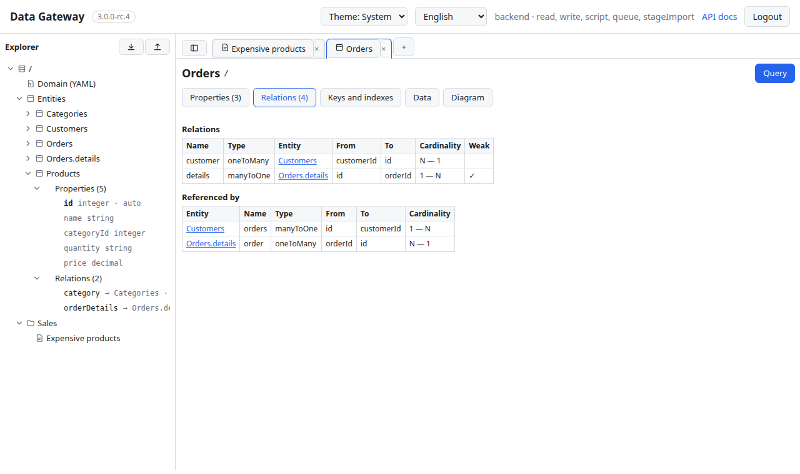
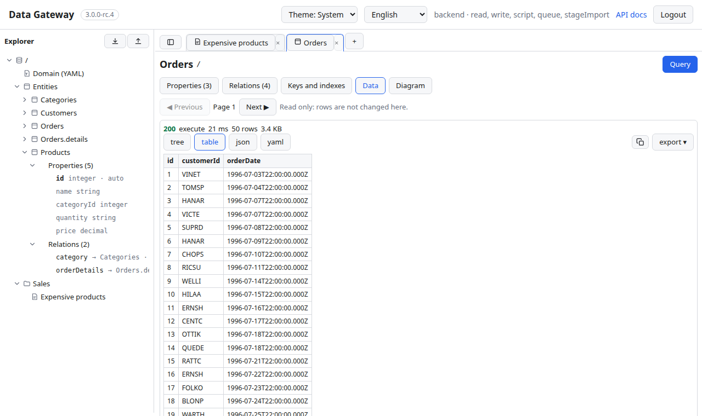

UI
Um tour passo a passo, do login até um diagrama, está em Primeiros passos.
O gateway serve uma interface web para explorar seus esquemas e consultá-los: um explorador dos esquemas e de suas entidades, o formulário de cada entidade, abas de consulta com o autocompletar do domínio, consultas salvas e diagramas do domínio. Ela é útil para experimentar consultas, aprender a linguagem e verificar o que um agente faz por MCP.
transports:
http:
port: 8080
ui: { enabled: true } # off by default
Ela fica em http://localhost:8080/ui/ (com basePath: /data-gateway, em /data-gateway/ui/). É servida pelo
mesmo transporte http e chama sua API REST com a credencial informada: não tem nenhum outro acesso.
Páginas
Início. O que é o Data Gateway, sua versão, os esquemas da instância com seu estado (ready, error, …), um
link para a documentação da API (Swagger) e o botão Entrar.

Login. A autenticação da instância e a credencial:
| Autenticação | Pede |
|---|---|
| API key | o header (padrão X-Api-Key) e a chave |
| Bearer token | o token |
| Basic | o usuário e a senha |
| Nenhuma | nada |
O botão Mostrar / Ocultar mostra o que foi digitado. A credencial é verificada em um esquema (/whoami): uma incorreta
é informada e a página permanece. A credencial fica apenas naquela aba do navegador: fechá-la ou recarregar a página
a esquece, e ela nunca é armazenada.

Consultas. O espaço de trabalho, após o login: no topo, o nome e as permissões da credencial, a documentação da API e Sair (volta para a página inicial).
No topo de todas as páginas há dois seletores:
- Tema: Sistema (como o sistema operacional), Claro ou Escuro.
- Idioma: English, Español, Português, Français, Italiano, Deutsch, Nederlands, Català, Galego, Euskara.
Ambos são lembrados pelo navegador.

Explorador
À esquerda, os esquemas da instância. Ele pode ser redimensionado arrastando sua borda e ocultado com o botão de painel da barra de abas. Para cada esquema:
- Domínio (YAML). O domínio do esquema (entidades, propriedades, relações, chaves, enums) em um editor somente leitura, com realce de sintaxe, busca e recolhimento. Ele mostra apenas o domínio: nunca as fontes, as conexões nem o resto da configuração.
- Entidades. Cada entidade se expande em:
- Propriedades, com seus tipos (a chave primária em negrito);
- Relações, com a entidade relacionada e a cardinalidade (
customer → Customers · N — 1); o botão Abrir de uma relação abre a entidade relacionada. O botão Abrir (↗) de uma entidade, um duplo clique ou Enter abrem seu formulário.
- O que está salvo no esquema: pastas, consultas e diagramas (abaixo).

Formulário da entidade
Como uma tabela em uma IDE de banco de dados, em sua própria aba, com estas seções:
| Seção | Mostra |
|---|---|
| Propriedades | cada propriedade: tipo (ou enum), tamanho, obrigatória, chave primária (e única), autoincremento, padrão, a entidade e a propriedade que uma chave estrangeira referencia (um link para ela) e suas expressões de leitura / escrita |
| Relações | suas relações (nome, tipo, entidade, de, para, cardinalidade, fraca) e Referenciada por: as relações de outras entidades que apontam para ela; cada entidade é um link para seu formulário |
| Chaves e índices | chave primária, chave única, índices com seus campos, restrições com sua mensagem e condição |
| Dados | suas linhas em uma tabela, somente leitura, 50 por página, com Anterior / Próxima; elas podem ser copiadas e exportadas como qualquer resultado |
| Diagrama | a entidade e suas vizinhas |
O botão Consultar abre uma aba de consulta com Entity.page(1, 10).



Consultas
Cada consulta é uma aba, com seu próprio esquema, texto, dados, opções e resultado; trocar de aba não perde nada. Uma aba é aberta com +, a partir de uma entidade (Consultar) ou de uma consulta salva, e fechada com seu ×.
- Editor com o autocompletar do domínio do esquema (entidades, propriedades, relações e funções) e os
erros do λORM marcados no texto durante a digitação. Modo: consulta ou script (scripts apenas quando o esquema os tem
habilitados e a credencial tem
script). - Dados e opções (JSON) e, para execuções enfileiradas, o tópico e o lote.
- Ações:
plan,metadata,model,parameters(preenche os dados com as variáveis da consulta),constraints,execute(Ctrl+Enter),execute queuede, no modo script,execute script. Uma ação que a credencial não pode usar fica desabilitada, e sua dica diz por quê. - Resultado: estado, operação, tempo, linhas e tamanho, e quatro visualizações: árvore, tabela (quando o resultado é uma lista
de linhas), JSON e YAML. A árvore e a tabela mostram até 200 linhas; as exportações têm todas.
- O ícone copiar copia o que é mostrado (a tabela como texto separado por tabulações, pronto para colar em uma planilha).
- Exportar baixa o resultado inteiro como JSON, YAML ou TXT (separado por tabulações).
- Histórico das últimas consultas de cada esquema, para recuperar uma delas.


Consultas salvas e diagramas
O + de um esquema ou de uma pasta adiciona:
- Nova pasta. As pastas se aninham, para organizar o que é salvo.
- Nova consulta. Uma aba de consulta cuja pasta é aquela.
- Novo diagrama. Veja Diagramas.
Cada item salvo tem um nome e uma descrição (exibida quando o ponteiro está sobre ele). Sua linha tem Editar (nome, descrição e pasta) e Excluir (com confirmação; uma pasta leva o que contém). Os itens são movidos arrastando-os para uma pasta ou para o esquema. Dois itens do mesmo tipo não podem ter o mesmo nome em uma pasta.
Uma aba de consulta tem Salvar (Ctrl+S) e Salvar como…: o primeiro salvamento pede o nome, a descrição e a pasta. Um • na aba marca alterações não salvas; depois de salva, ela indica salvo. Abrir uma consulta salva que já está aberta leva à sua aba.

Diagramas
Um diagrama do domínio mostra as entidades escolhidas como caixas, com suas propriedades, tipos, PK e FK (as obrigatórias em negrito), e as relações como linhas com sua cardinalidade (1 — N, 1 — 1); uma herança é uma linha tracejada.
Novo diagrama pede o nome, a descrição, a pasta e as entidades: elas são buscadas, marcadas uma a uma ou completadas com Adicionar as vizinhas (as entidades relacionadas às escolhidas).

Em um diagrama:
| Ação | Como |
|---|---|
| Organizar | automático ao abrir (as caixas são posicionadas pelo ELK); reorganizar volta a esse layout |
| Mover uma caixa | arraste-a |
| Mover uma linha | arraste-a para o lado; suas extremidades ficam nas linhas dos campos que ela une; um duplo clique a recoloca |
| Remover uma entidade | o × de sua caixa (exibido quando o ponteiro está sobre ela), ou clique na caixa e pressione Delete |
| Adicionar ou remover entidades | Entidades… |
| Nomes das relações | nomes das relações |
| Apenas os nomes das entidades | só nomes |
| Zoom e movimentação | a roda do mouse; arraste o fundo; ajustar mostra tudo |
| Abrir uma entidade | duplo clique em sua caixa |
| Exportar | SVG ou PNG |
O diagrama é salvo (Salvar ou Ctrl+S) com a posição de cada caixa e linha, a opção de nomes e as entidades.

Onde é salvo
O que é salvo (pastas, consultas, diagramas) fica no navegador, em seu IndexedDB, separado por gateway e por credencial: o que uma credencial salva não é visto com outra. Apenas o nome da credencial é usado para isso, nunca seu segredo.
- Fica naquele navegador, naquele dispositivo: outro navegador ou outro dispositivo não o vê.
- É perdido se os dados do site forem apagados no navegador. Pede-se ao navegador que os mantenha, e o explorador exporta tudo para um arquivo JSON (⤓) e o importa de volta (⤒), adicionando ao que existe ou substituindo: um backup, uma forma de levá-lo para outro navegador ou de compartilhá-lo com alguém.
- Em um navegador que não permite armazenar dados (algumas janelas privadas), o explorador avisa: o que é salvo dura até a página ser fechada.
Na sua própria aplicação
A UI é construída com @lambdaorm/ui, uma biblioteca de componentes React
que qualquer aplicação web pode usar com um Data Gateway:
npm install @lambdaorm/ui react react-dom
import { Workspace } from '@lambdaorm/ui'
import '@lambdaorm/ui/styles.css'
<Workspace
baseUrl="https://gateway.example.com" // the http transport of the gateway
headers={() => ({ 'X-Api-Key': key })} // how to authenticate; the library keeps no credential
locale="es"
theme="dark"
workspaceKey={`gateway.example.com|${user}`} // separates what is saved
/>
| Componente | O que é |
|---|---|
Workspace |
o espaço de trabalho inteiro: explorador, formulários de entidades, consultas, itens salvos e diagramas |
QueryWorkbench |
um editor de consultas com suas ações e seu resultado |
QueryTabs |
várias bancadas em abas |
DomainDiagram |
um diagrama do domínio (uma entidade e suas vizinhas, o modelo inteiro ou entidades escolhidas) |
EntityView |
o formulário de uma entidade |
ResultViewer |
um resultado como árvore, tabela, JSON ou YAML, com cópia e exportação |
O que é salvo pode ir para outro lugar além do navegador informando store (um WorkspaceStore, por exemplo um backend
próprio).